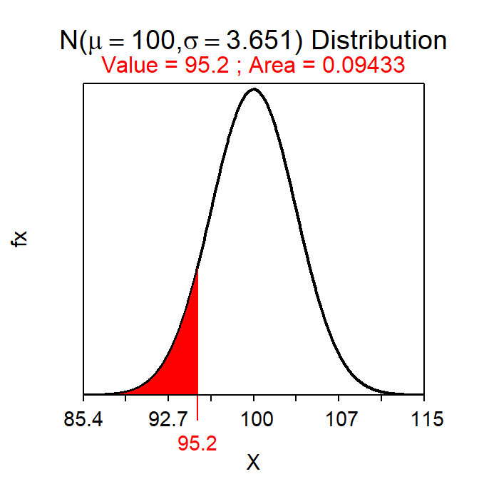

Module 19 2-Sample t-Test
While it is often useful to test whether a population mean differs from a specific value (i.e., with the 1-Sample t-Test of Module 18), there are many instances where interest is in whether means from two groups (or populations) differ. For example, is there a difference in mean income between males and females, in mean test scores between students from high- and low-income families, in mean percent body fat between raccoons from southern and northern Wisconsin, or in mean amount of milk produced from cows provided with a hormone or a placebo. In all of these situations, interest is identifying if a difference in population means exists between two groups (males and females, students from high- and low-income families, raccoons from southern and northern Wisconsin, cows given a hormone or a placebo). A 2-Sample t-Test is used in these situations and is the subject of this module.
19.1 2-Sample t-Test Specifics
In a 2-Sample t-Test, H0:μ1=μ2 states that the two population means are equal. This can be rewritten as H0:μ1-μ2=0, because the difference between two population means is zero if the two population means are equal. With this H0, the “parameter” is μ1-μ2 and the corresponding statistic is \(\bar{\text{x}}_{1}-\bar{\text{x}}_{2}\). Thus, a 2-Sample t-Test is focused on the difference in population means.
When looking at the “general” test statistic formula (see Section 14.2) of
\[ \text{Test Statistic} = \frac{\text{Observed Statistic}-\text{Hypothesized Parameter}}{SE_{\text{Statistic}}} \]
it is apparent that the SE of \(\bar{\text{x}}_{1}-\bar{\text{x}}_{2}\) (i.e., the statistic) is needed. Unfortunately, the calculation of this standard error depends on whether the two population variances are equal or not. When the variances are approximately equal (discussed in Section 19.2), the standard error of \(\bar{\text{x}}_{1}-\bar{\text{x}}_{2}\) is
\[ SE_{\bar{\text{x}}_{1}-\bar{\text{x}}_{2}}= \sqrt{s_{p}^{2}\left(\frac{1}{n_{1}}+\frac{1}{n_{2}} \right)} \]
where \(n_{1}\) and \(n_{2}\) are the sample sizes for the two groups and \(s_{p}^{2}\) is the “pooled sample variance” computed as a weighted average of the two sample variances (\(s_{1}^{2}\) and \(s_{2}^{2}\)), or
\[ s_{p}^{2}=\frac{(n_{1}-1)s_{1}^{2}+(n_{2}-1)s_{2}^{2}}{n_{1}+n_{2}-2} \]
The degrees-of-freedom for the 2-Sample t-Test with equal variances come from the denominator of the pooled variance calculation; i.e., \(df=n_{1}+n_{2}-2\). The specifics of the 2-Sample t-Test are below.
- Hypothesis: H0:μ1-μ2=0
- Statistic: \(\bar{\text{x}}_{1}-\bar{\text{x}}_{2}\)
- Test Statistic: t=\(\frac{\bar{\text{x}}_{1}-\bar{\text{x}}_{2}-0}{\sqrt{s_{p}^{2}\left(\frac{1}{n_{1}}+\frac{1}{n_{2}} \right)}}\) where \(s_{p}^{2}=\frac{(n_{1}-1)s_{1}^{2}+(n_{2}-1)s_{2}^{2}}{n_{1}+n_{2}-2}\).
- Confidence Region: \((\bar{\text{x}}_{1}-\bar{\text{x}}_{2})+t^{*}\sqrt{s_{p}^{2}\left(\frac{1}{n_{1}}+\frac{1}{n_{2}} \right)}\)
- df: n1+n2-2
- Assumptions:
- n1+n2≥40, n1+n2≥15 and each sample (i.e., histogram) is not strongly skewed, OR each sample is normally distributed.
- Variances are equal,
- Samples are independent,
- Use with: Quantitative response, two groups (or populations), individuals are independent between groups.
The \(s_{p}^{2}\) calculation can be “checked” by determining if the value of \(s_{p}^{2}\) is between \(s_{1}^{2}\) and \(s_{2}^{2}\) or if the value of \(\sqrt{s_{p}^{2}}\) is between \(s_{1}\) and \(s_{2}\).
A 2-Sample t-Test is often used to test an alternative hypothesis of simply finding a difference between the two groups. However, if the null hypothesis is rejected in these instances (thus, identifying a significant difference between the two groups), then care should be taken to specifically describe how the two groups differ. If the statistic is negative, then the mean of the first group is lower than the mean of the second group and, if the statistic is positive, then the mean of the first group is larger than the mean of the second group. The values of the confidence region should be used to identify how much larger or smaller the mean from one group is compared to the mean of the other group.
19.2 Testing for Equal Variances
As noted above, the methods of a 2-Sample t-Test differ depending on whether the two population variances are equal or not. This should present a problem to you because the population variances are parameters and are typically not known.64 The question of whether these parameters are equal or not is answered with a hypothesis test, as has been done with all other questions about parameters.
A Levene’s Test is used to determine whether two population variances are equal. The specifics of the Levene’s test are not examined in detail here, rather you only need to know that H0:\(\sigma_{1}^{2}=\sigma_{2}^{2}\) is tested against HA:\(\sigma_{1}^{2}\neq\sigma_{2}^{2}\). We will use computer software to compute the p-value for this test (without further detail). If the Levene’s Test p-value <α, then H0 is rejected and the population variances are considered unequal. If the p-value >α, then H0 is not rejected and the population variances are considered equal.
19.3 Examples
19.3.1 Corn and Fertilizers
Below are the 11-steps (Section 17.1) for completing a full hypothesis test for the following situation:
An agricultural researcher thought that corn plants grown in pots exposed to a certain type of synthetic fertilizer would grow taller than plants exposed to an organic fertilizer. To collect data to test this idea, he grew 50 corn plants in individual pots – 25 were treated with organic fertilizer and 25 were treated with synthetic fertilizer. Each pot contained soil from a well-mixed common source and was planted in the same greenhouse. Each plant was similar in all regards (similar genetics, age, etc.). Use the results (heights of individual plants) in Table 19.1 and a Levene’s Test p of 0.1341 to test the researcher’s hypothesis at the 5% level.
| Group | Mean | SD |
|---|---|---|
| Synthetic | 51.46 | 5.975 |
| Organic | 47.49 | 6.721 |
- α = 0.05.
- H0:μs-μo = 0 vs HA:μs-μo > 0, where μ is the mean plant height, s represents synthetic fertilizer, and o represents organic fertilizer. [Note that positive differences represent larger values for synthetic fertilizer; thus, HA represents synthetic fertilizer producing taller plants.]
- A 2-Sample t-Test is required because …
- a quantitative variable (height) was measured,
- two groups are being compared (synthetic and organic fertilizers), and
- plants in the two groups were INdependent as the plants were not paired, plants were not tested over time, etc.
- The data appear to be part of an experiment (the researcher imposed the treatments on the plants) with no clear indication of random selection of plants or random allocation of plants to the two treatments.
- ns+no = 50≥40,
- individuals in the two groups are independent as discussed above, and
- the population variances appear to be equal because the Levene’s Test p-value (0.1341) is >α.
- \(\bar{\text{x}}_{s}-\bar{\text{x}}_{0}\) = 51.46 - 47.49 = 3.97. Additionally, \(s_{p}^{2}=\frac{(25-1)5.975^{2}+(25-1)6.721^{2}}{25+25-2}\) = 40.44 and \(SE_{\bar{\text{x}}_{s}-\bar{\text{x}}_{o}}=\sqrt{40.44\left(\frac{1}{25}+\frac{1}{25} \right)}\) = 1.799.
- t = \(\frac{3.97-0}{1.799}\) = \(\frac{3.97}{1.799}\) = 2.207 with 25+25-2 = 48 df.
- p-value = 0.0161.
- H0 is rejected because the p-value<α.
- The average height of the corn plants appears to be greater for plants grown with synthetic fertilizer than for plants grown with organic fertilizer.
- I am 95% confident that plants grown with synthetic fertilizer are more than 0.95 cm taller, on average, than plants grown with the organic fertilizer. [Note 3.97-1.677×1.799 = 3.97 - 3.02 = 0.95.]
R Appendix:
( pval <- distrib(2.207,distrib="t",df=48,lower.tail=FALSE) )
( tstar <- distrib(0.95,distrib="t",df=48,type="q",lower.tail=FALSE) )
19.3.2 Music and Anxiety
Below are the 11-steps (Section 17.1) for completing a full hypothesis test for the following situation:
An oral surgeon conducted an experiment to determine if background music decreased the anxiety level of patients during tooth extraction. Over a one-month period, 32 patients had a tooth removed while listening to music and 36 had a tooth removed without listening to music. Each patient was given a questionnaire following the extraction. Answers to the questionnaire were converted to a numeric scale to measure the patient’s level of anxiety (larger numbers mean more anxiety). For those given background music, the mean anxiety level was 4.2 (with a standard deviation of 1.2), while the group without music had a mean of 5.9 (with a standard deviation of 1.9). The surgeon also reported a Levene’s test p-value of 0.089. Test the surgeon’s hypothesis at the 5% level.
- α = 0.05.
- H0:μw-μwo=0 vs HA:μw-μwo<0, where μ is the mean anxiety level, w represents patients “with,” and wo represents “without” music. [Note that negative numbers represent lower anxiety values in patients in the “with music” treatment. Thus, HA suggests lower anxiety in patients with music.]
- A 2-Sample t-Test is required because …
- a quantitative variable (anxiety level) was measured,
- two groups are being compared (music or no music), and
- individuals in the two groups are independent (i.e., they were not paired, were not otherwise related, etc.).
- The data appear to be an experiment as the music treatment was imparted by the surgeon, but there is no obvious random selection or allocation in this study.
- nw+nwo = 68≥40,
- individuals in the two groups are independent as described above, and
- the two population variances appear to be equal because the Levene’s Test p-value of 0.089 is greater than α.
- \(\bar{\text{x}}_{w}-\bar{\text{x}}_{wo}\) = 4.2-5.9 = -1.7. Additionally, \(s_{p}^{2}=\frac{(32-1)1.2^{2}+(36-1)1.9^{2}}{32+36-2}\) = 2.59 and \(SE_{\bar{\text{x}}_{w}-\bar{\text{x}}_{wo}}=\sqrt{2.59\left(\frac{1}{32}+\frac{1}{36} \right)}\) = 0.391.
- t = \(\frac{-1.7-0}{0.391}\) = -4.348 with 32+36-2 = 66 df.
- p-value = <0.00005.
- H0 is rejected because the p-value<α.
- The mean anxiety level appears to be lower when music was played for the patients.
- I am 95% confident that the mean anxiety level is more than 1.05 points lower, on average, when music is played than when it is not. [Note -1.7+1.668×0.391 = -1.7+0.65 = -1.05].
R Appendix:
( pval <- distrib(-4.348,distrib="t",df=66) )( tstar <- distrib(0.95,distrib="t",df=66,type="q") )
Actually, the population variances don’t have to be known, it just needs to be known whether they are equal or not.↩︎